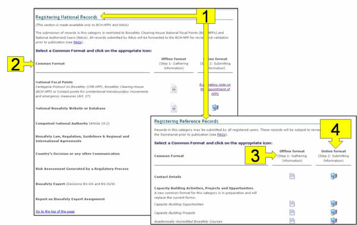

Al hacer clic en el enlace Register a new record en el menú de la izquierda, los usuarios registrados pueden ingresar información para que esté disponible al público a través del CIISB. En el CIISB, los documentos almacenados son llamados registros.
El proceso de registro de nueva información consiste en los siguientes pasos:
-
Seleccionar el tipo de registro de una lista de vínculos existentes;
-
Completar todos los campos de los formularios de registro electrónicos;
-
Hacer clic en el botón de Review para cerciorarse de que la información ingresada sea completa y precisa;
-
Hacer clic en el botón de Save changes; y
-
Hacer clic en el botón Submit for publishing para hacer público el registro en el CIISB.
Existen dos categorías de información en el CIISB: Registros Nacionales y de Referencia.

Figura 6
Los tipos de información que los usuarios registrados pueden enviar depende de sus roles de la siguiente manera:
-
Los puntos focales del CIISB (PFN-CIISB) pueden registrar todos los tipos de registros del CIISB a excepción de los registros de Puntos Focales Nacionales. Cuando los Registros Nacionales son enviados por un PFN-CIISB, éstos son publicados directamente; si se trata de Registros de Referencia, éstos serán sometidos a validación de la Secretaría previo a su publicación.
-
Los Usuarios Nacionales Autorizados (UNA) también pueden registrar todos los tipos de registros del CIISB excepto Puntos Focales Nacionales. Cuando un NAU envía un Registro Nacional, éste debe ser validado por su correspondiente PFN-CIISB mientras que los Registros de Referencia deben ser validados por la Secretaría para ser publicados en el CIISB.
-
Los usuarios generales registrados pueden registrar todos los tipos de Registros de Referencia, los cuales deben ser validados por la Secretaría para su publicación en el CIISB.

Figura 7
La página de Register a new record proporciona acceso a los siguientes:
-
Categorías de documentos (nacionales y de referencia);
-
Nombres de los Formatos Comunes;
-
Enlace a los Formatos Comunes fuera de línea;
-
Enlace a los Formatos Comunes en línea.